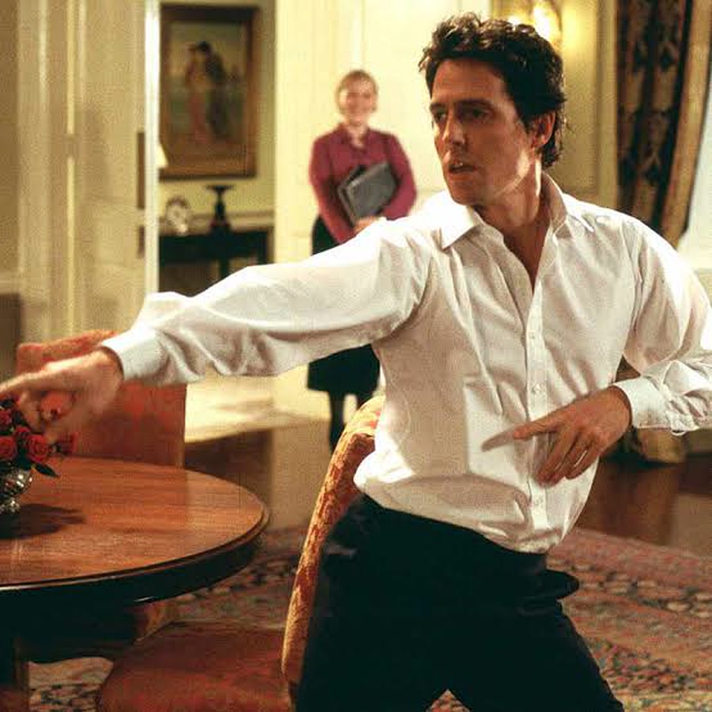
Музыка и танцы
Кавер-группа, популярные хиты, возможность заказать любимую песню, петь вместе с музыкантами и танцевать.
Новогодние традиции и ритуалы разных стран
Предлагаем отметить Новый год в атмосфере уютного загородного семейного праздника. В основе концепции — новогодние традиции и ритуалы разных стран, объединённые общей идеей: проводить время вместе, делиться пожеланиями, создавать воспоминания и начинать новый год с приятных традиций.
В течение дня гостей ждут тематические станции, творческие мастер-классы, живая музыка, уютные зоны отдыха и совместные активности. Главная особенность мероприятия — свободный формат участия: каждый самостоятельно выбирает, чем заниматься, перемещается между локациями и проводит время в комфортном ритме.
Общие моменты, которые объединят гостей: совместное зажжение новогодней ёлки, праздничный ужин и символический ритуал с чичилаки.
Gurtam Family New Year — не классический корпоратив с ведущим и конкурсами, а уютный загородный праздник, где новогодние традиции разных стран становятся поводом провести время вместе, создать собственные семейные ритуалы Gurtam и начать новый год с приятных воспоминаний.
16 января 2027 · нажмите на событие, чтобы раскрыть подробности
Организованный трансфер на двух комфортабельных микроавтобусах вместимостью по 20 человек.
Сытный обед в формате фуршета, знакомство с площадкой. Для гостей предусмотрены номера, где можно переодеться и оставить личные вещи.
Свободная работа тематических станций: совместное украшение ёлки, новогодняя почта и письма в будущее, мастерская новогодних игрушек, подготовка пожеланий для ритуала с чичилаки, отдых у костра с глинтвейном, какао и маршмеллоу, Christmas Movie Lounge. В течение программы звучит живая инструментальная музыка, проходят персональные музыкальные сюрпризы; работает фотограф.
В течение дня гости постепенно украшают общую ёлку винтажными игрушками. Перед ужином все собираются вместе, чтобы торжественно зажечь гирлянды на ёлке Gurtam. Это первый общий праздничный ритуал и момент для совместных фотографий.
Все гости собираются в большом зале за общим праздничным столом. Полноценный ужин с сервировкой, общение и праздничная атмосфера.
После ужина гости собираются на улице у большого костра. В течение дня каждый заранее написал пожелание на будущий год. Во время ритуала участники по очереди подходят к большой чичилаки, отрезают от неё несколько кудрей, привязывают к ним свои заранее подготовленные пожелания и сжигают их в костре. Сама чичилаки остаётся на месте — сжигаются только срезанные кудри с пожеланиями. Ритуал символизирует завершение старого года, обновление и начало нового этапа.
Кавер-группа, популярные песни, танцы, коктейльный бар, бильярд и уютные зоны для общения. Гости самостоятельно выбирают, как провести оставшуюся часть вечера.
Предварительно предлагаются два времени отправления: ранний рейс в 22:00 и финальный в 00:00. Расписание уточняется после согласования.
16:00–19:30 · выберите станцию, чтобы посмотреть фото и описание
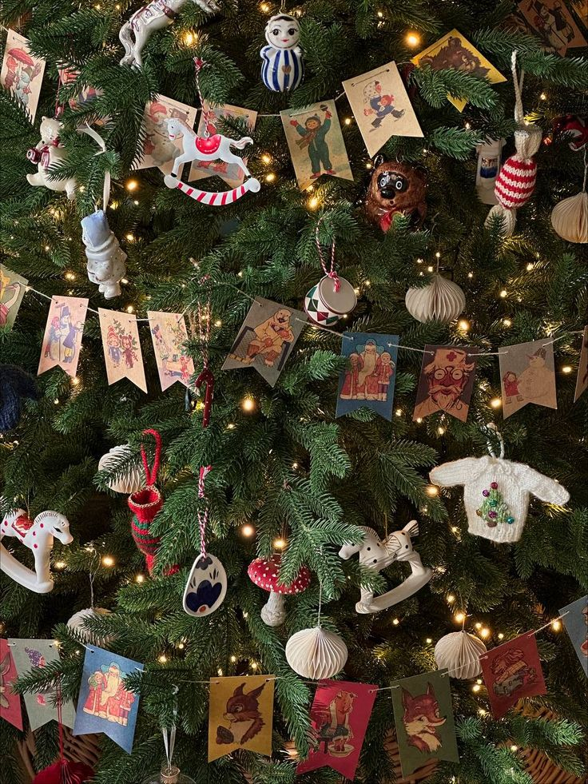
Семейная ёлка GurtamНа площадке будет установлена большая новогодняя ёлка с заранее подготовленными гирляндами. Рядом разместится коробка с винтажными игрушками и другой праздничной атрибутикой.
Каждый гость сможет выбрать понравившуюся игрушку и повесить её на общую ёлку. В течение дня ёлка постепенно будет наполняться украшениями, выбранными всей командой Gurtam.
Перед ужином все собираются у ёлки для торжественного зажжения гирлянд и совместных фотографий.
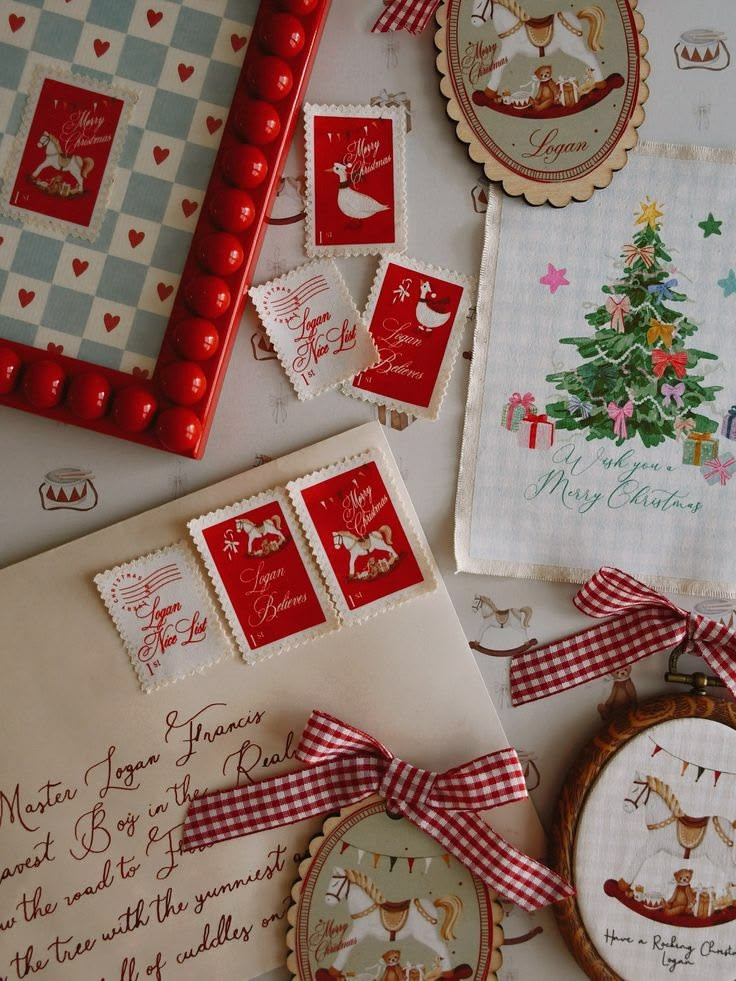
Новогодняя почта и письма в будущееТворческая станция, где можно присесть и спокойно оформить открытку или письмо. На столах будут подготовлены бумага, открытки, конверты и разнообразные материалы для декора.
Письмо себе в будущее. Каждый сможет написать пожелания или послание самому себе на будущий год, красиво оформить открытку, положить её в конверт, запечатать и открыть в конце следующего года.
Письмо близкому человеку. Можно написать новогоднее поздравление другу или близкому, запечатать письмо и указать отправителя и получателя. Готовые письма соберут организаторы для последующей отправки. Адрес получателя можно будет передать HR позднее.
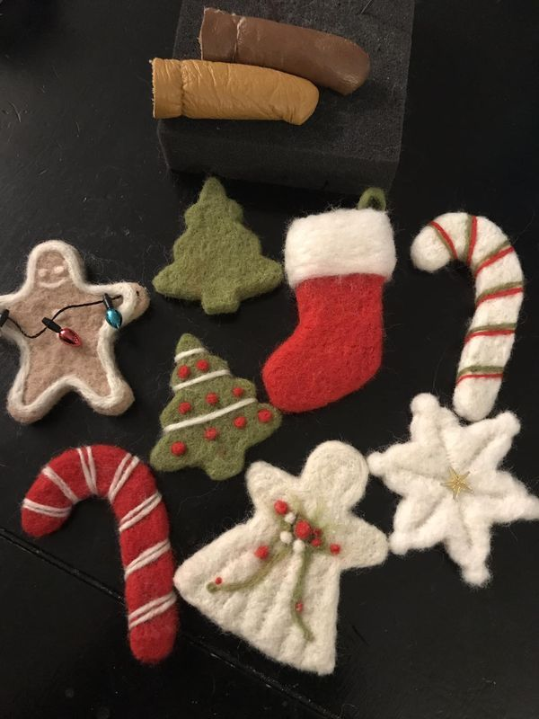
Мастерская новогодних игрушекТворческий мастер-класс по изготовлению собственной новогодней игрушки. Один из рассматриваемых вариантов — создание игрушки из шерсти; также рассматриваются другие техники и материалы.
Каждый участник сможет сделать своё украшение и забрать готовую игрушку домой на память о празднике.
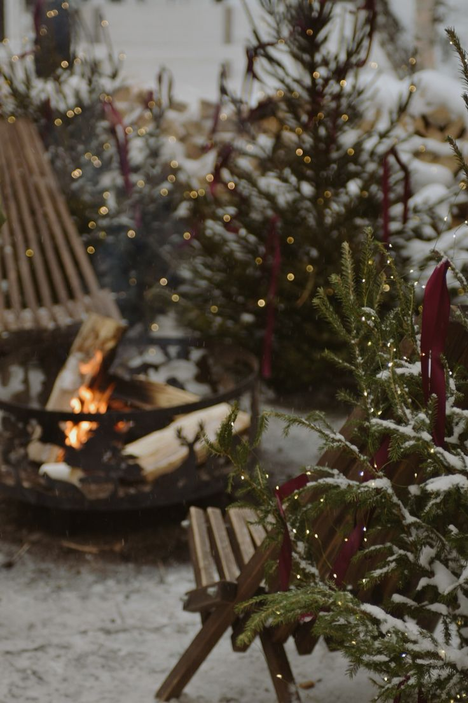
Winter Fire PlaceНа улице будет организована уютная зона с костровищем, комфортными местами для отдыха и тёплыми пледами.
Здесь можно будет выпить глинтвейн или какао, самостоятельно пожарить маршмеллоу на костре, пообщаться с коллегами и насладиться свежим воздухом и загородной атмосферой. Зона будет доступна в течение мероприятия.
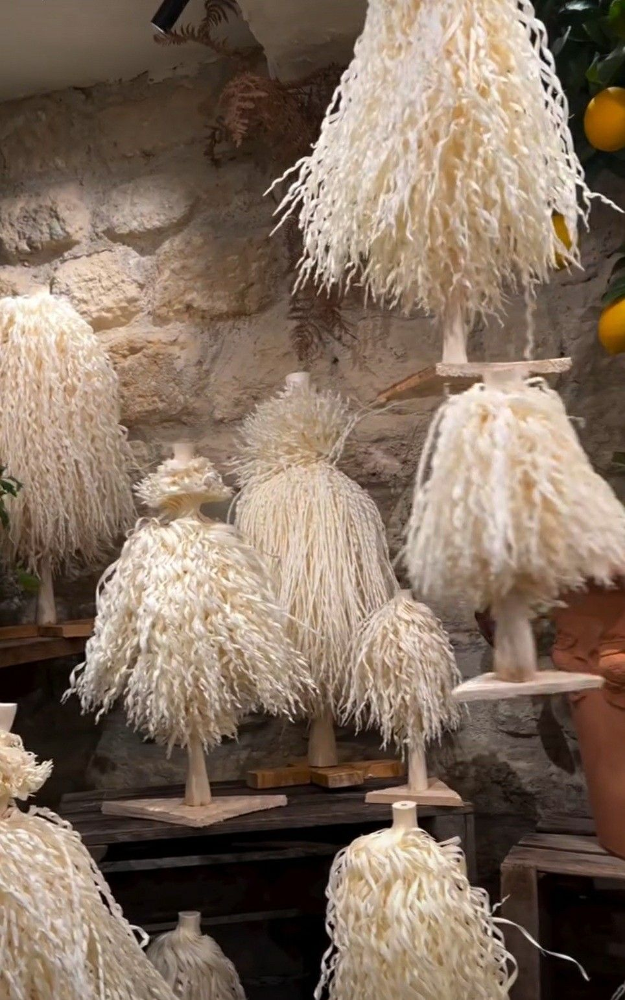
Чичилаки — новогодние пожеланияСтанция посвящена грузинской новогодней традиции. В течение дня каждый гость сможет написать своё пожелание себе на будущий год на специальной карточке или ленточке. Пожелания готовятся заранее, до праздничного ужина.
После ужина гости собираются на улице у большого костра и большой чичилаки. Каждый участник по очереди подходит к чичилаки, отрезает от неё несколько кудрей, привязывает к срезанным кудрям своё заранее написанное пожелание и сжигает кудри вместе с пожеланием в общем костре.
Важно: чичилаки целиком не сжигается. Она остаётся на месте; в огонь отправляются только отрезанные кудри с привязанными пожеланиями. Это общий символический ритуал завершения старого года и начала нового.
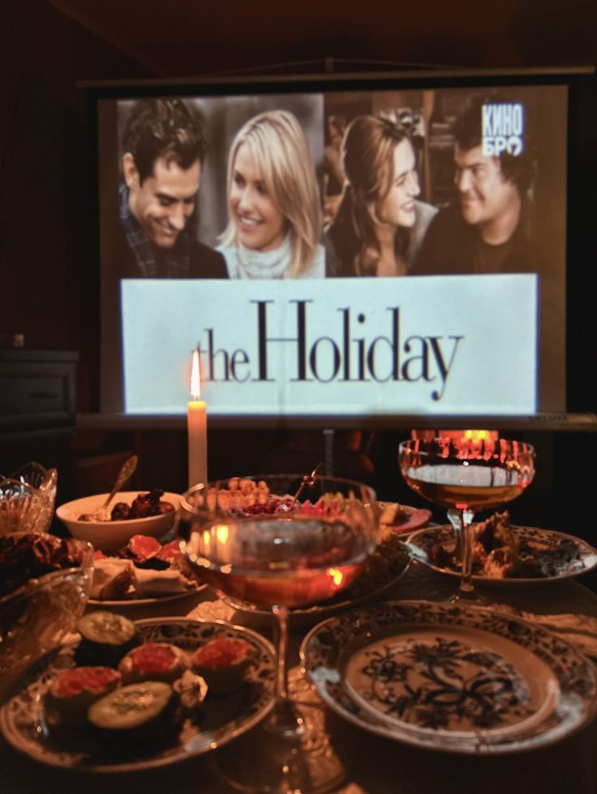
Christmas Movie LoungeОтдельная уютная зона с диванами и телевизором. Заранее будет подготовлена подборка любимых новогодних фильмов.
Гости смогут самостоятельно выбрать фильм, посмотреть его, отдохнуть или просто пообщаться в более спокойной обстановке.
Музыкальное сопровождение станет важной частью праздника. Заранее предложим каждому участнику выбрать одну-две любимые песни. Из этих композиций сформируем специальный плейлист Gurtam.
В течение дневной программы примерно каждые 30 минут в общем чате будет появляться сообщение о том, чья любимая песня прозвучит следующей и в какой локации её можно послушать. Музыканты будут исполнять выбранные композиции в живом инструментальном формате, создавая небольшие персональные сюрпризы для гостей.
После праздничного ужина музыкальная программа станет более динамичной: кавер-группа перейдёт к популярным композициям с вокалом, танцам и музыкальным пожеланиям от гостей.
После общего ритуала с чичилаки гости возвращаются к свободному формату отдыха.

Кавер-группа, популярные хиты, возможность заказать любимую песню, петь вместе с музыкантами и танцевать.
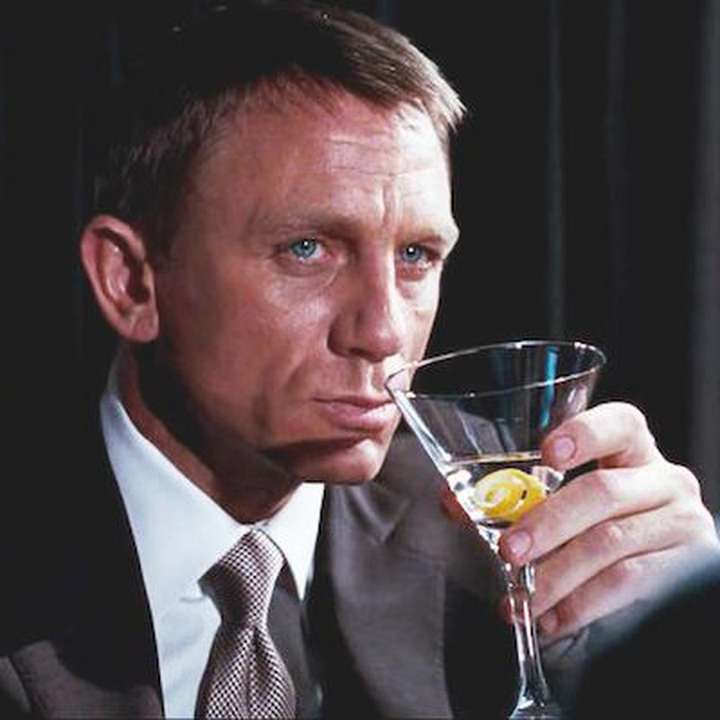
Коктейли из заранее согласованного меню. Дополнительно можно предусмотреть мастер-класс по приготовлению коктейлей.
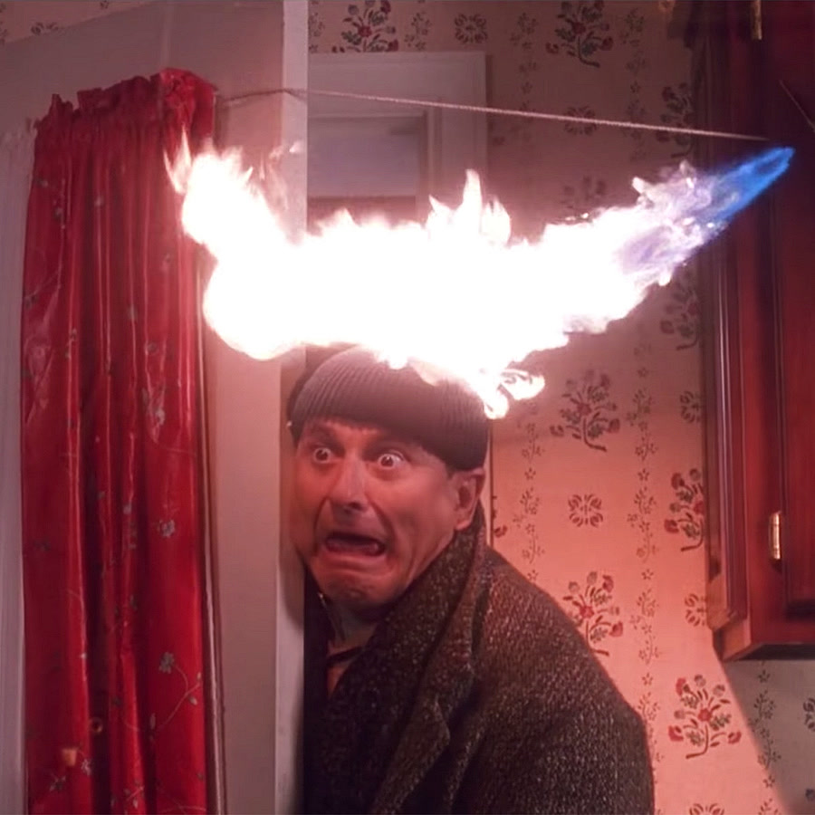
Тёплые напитки, пледы и общение на свежем воздухе.
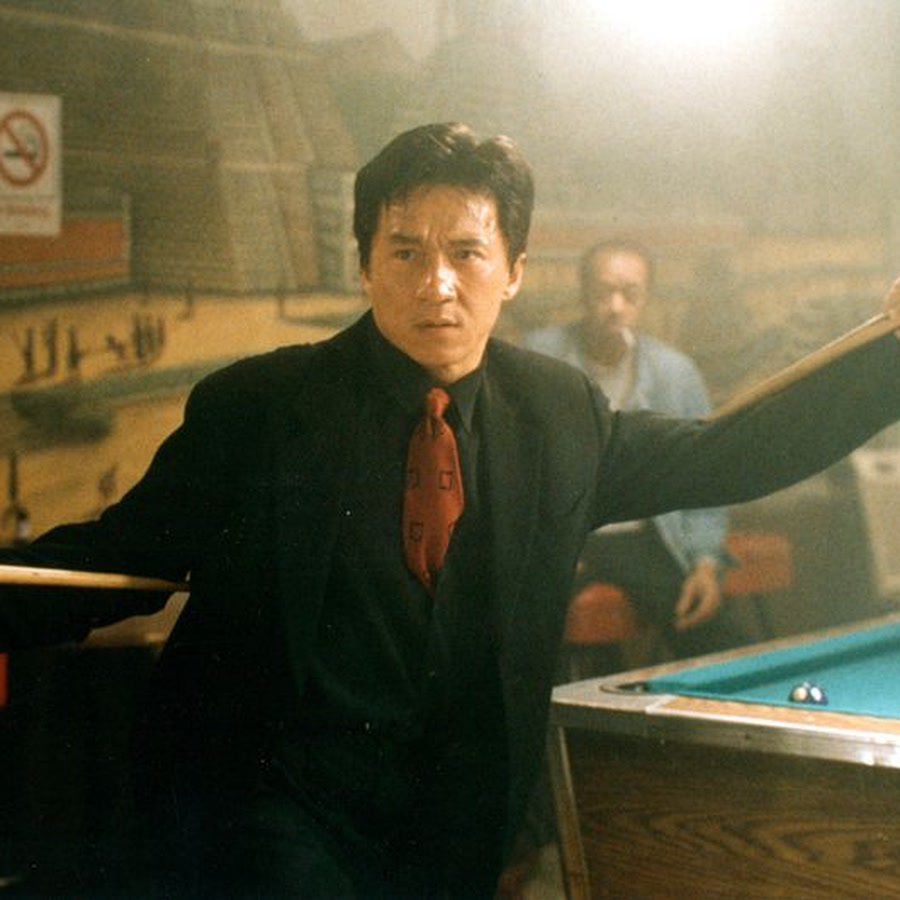
Игры, разговоры и спокойный отдых на диванах в комфортной обстановке.
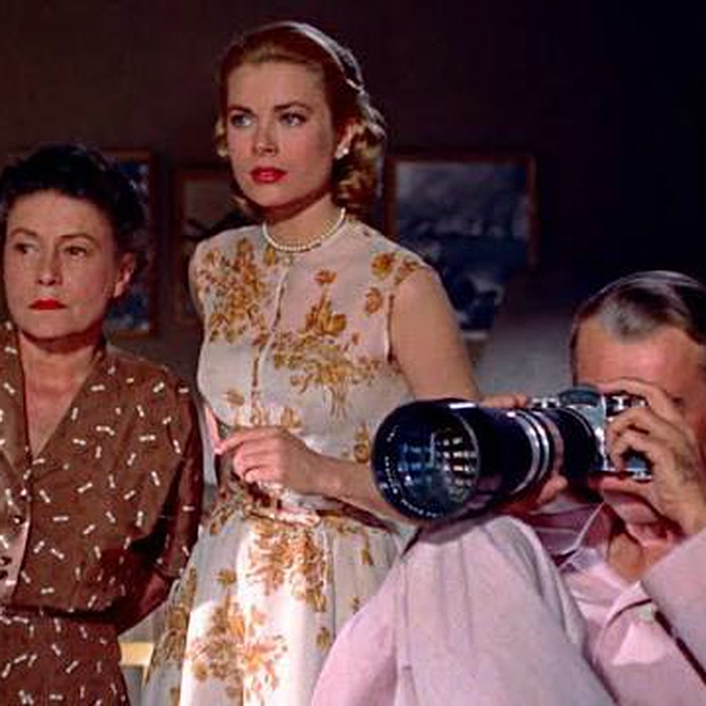
На протяжении всего мероприятия будет работать фотограф, чтобы сохранить общие моменты праздника, индивидуальные фотографии и живые кадры общения.
Фотографии площадки
Винодельня среди виноградников с панорамным дегустационным залом, гостевой зоной, открытой территорией и террасой на крыше. В зале есть кухня для кейтеринга и сервировки.

Панорамный дегустационный зал с кухней для кейтеринга и сервировки.
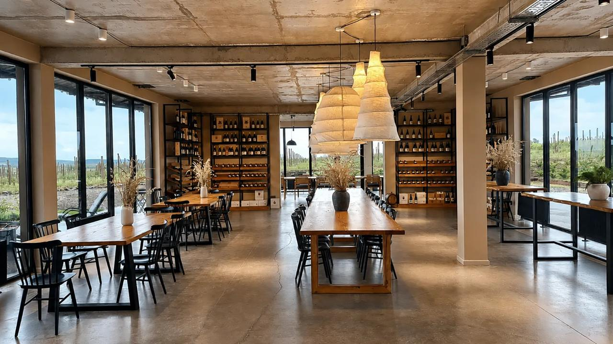

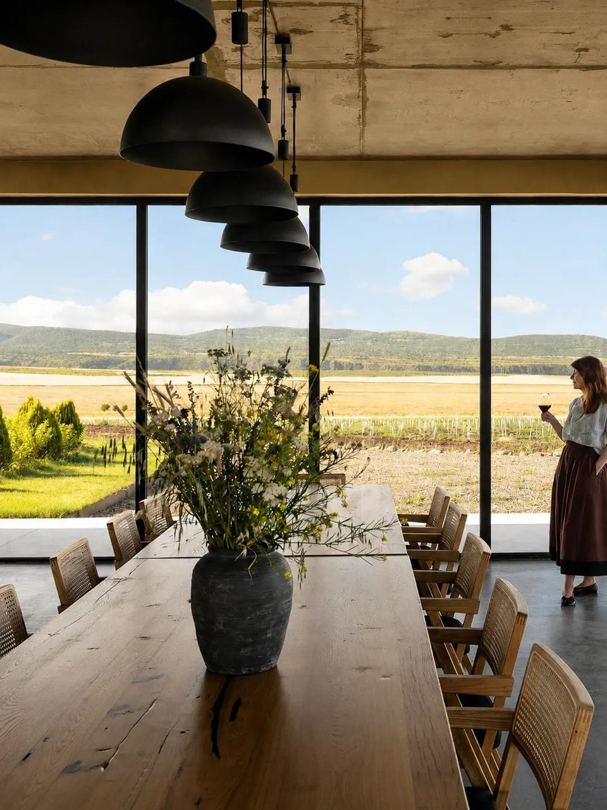
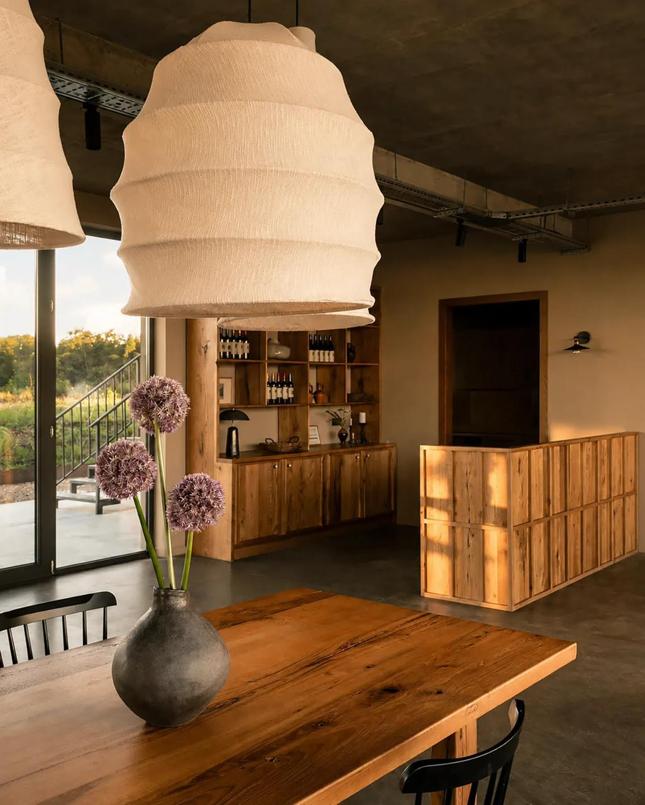
Гостиничная часть включает гостиную, столовую на 12 человек и кухню. На кухне можно готовить, здесь есть бытовая техника: плита, духовой шкаф, микроволновка и кофемашина.
В гостевой зоне одна уборная.
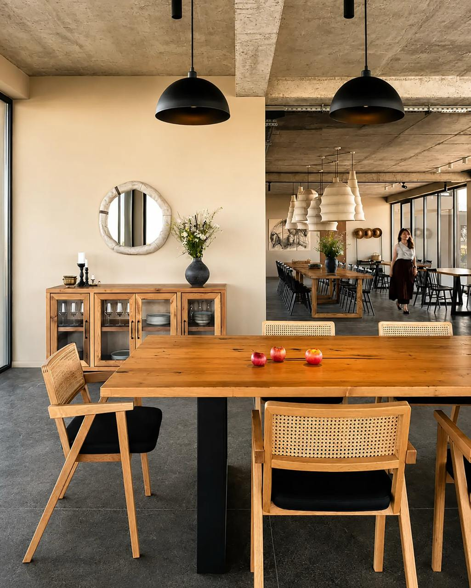
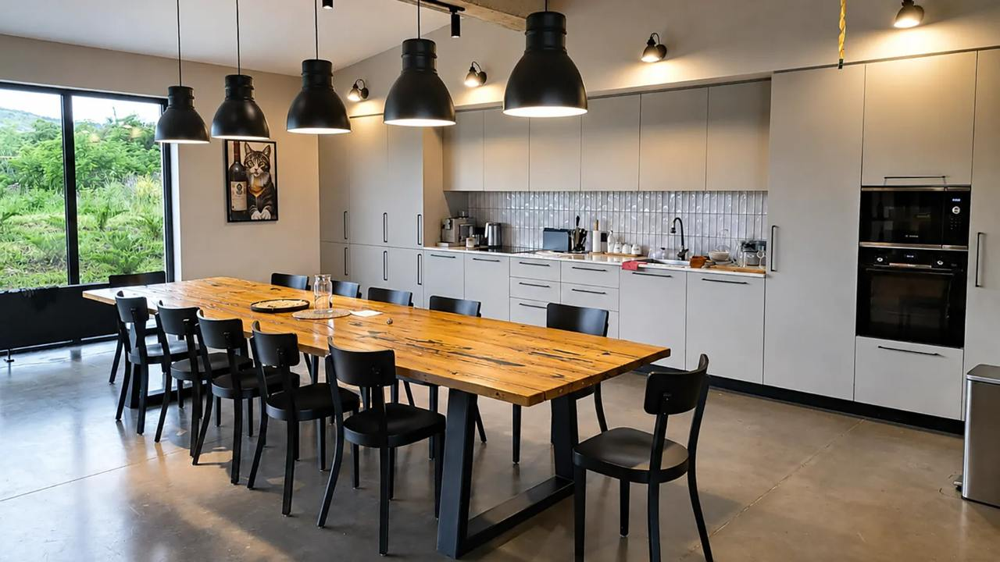
На площадке есть зона на крыше. На улице два стола, сейчас они стоят в разных зонах, и 16 стульев.
Есть общий мангал, который можно поставить с другой стороны здания. Угли площадка не предоставляет.
Входная группа производственной части, производственные залы и винный погреб.